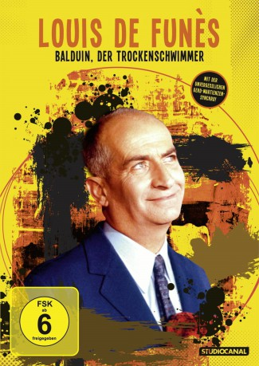

#4533 Balduin, der Trockenschwimmer
 
 IMDB-Wertung: 6.6 / 10
IMDB-Wertung: 6.6 / 10  Metascore: 0
Metascore: 0 
Schiffskonstrukteur Castagnier hat mit seinem Boot "Der Kleine Wasservogel" einen Preis gewonnen und taucht freudestrahlend bei seinem Chef Fourchaume auf.Doch der ist ein cholerischer Zeitgenosse. Castagnier kommt im falschen Moment und wird einfach als Sündenbock entlassen. Doch das bereut Fourchaume, als er vom Preisgewinn erfährt. Nun versucht er alles, seinen entlassenen Mitarbeiter zurückzugewinnen...
Jahr: 1968
Dauer: 93 Minuten
FSK: 12
Land: Frankreich Studio: Constantin FilmTonspuren:
Untertitel: Deutsch,
Auflösung: 1080p (1920x824) Größe: 6717 MB
Genre: Komödie
Regisseur: Robert Dhéry
Drehbuch: Morgan Land
Soundtrack:
Darsteller:
 Louis de Funès als Louis-Philippe Fourchaume
Louis de Funès als Louis-Philippe Fourchaume- Franco Fabrizi als Marcello Cacciaperotti
 Michel Galabru als Scipio
Michel Galabru als Scipio- Andréa Parisy als Marie-Béatrice Fourchaume
- Michèle Alexandre als L'épouse du ministre
- Nicole Vervil als La mère du petit Francis
- Robert Rollis als Un marin
- Georges Adet als Le gardien du chantier
- Philippe Dumat als Le joueur de tambour de la fanfare
- Gérard Calvi als Le chef de la fanfare
- Roger Caccia als L'organiste
- Hélène Dieudonné als La garde-barrière
- Pierre Tornade als Le gardien de phare
- Pierre Dac als Le ministre
 Henri Génès als Le paysan
Henri Génès als Le paysan- Jacques Legras als Henri Castagnier, le curé
- Colette Brosset als Charlotte Castagnier
- Robert Dhéry als André Castagnier
- Georges Bever als Le majordome des Fourchaume , uncredited
- Claude Darget als Le speaker de la course nautique , uncredited
- Yvette Dolvia als Mlle Rongibut , uncredited
- Faïda Faggin als Miss San Remo , uncredited
- Max Montavon als L'homme nu de la cabine , uncredited
 Pierre Tchernia als Le président du jury , uncredited
Pierre Tchernia als Le président du jury , uncredited
Datei: X:\Person\Louis de Funès\Balduin, der Trockenschwimmer (1968, FSK12, 1920x824).mkv seit 09.10.2016
Festplatte: HD Collection-7+mehr(A-Z)+Person
 Es gibt insgesamt 33 Filme in der Gruppe 'Person\Louis de Funès'
Es gibt insgesamt 33 Filme in der Gruppe 'Person\Louis de Funès'